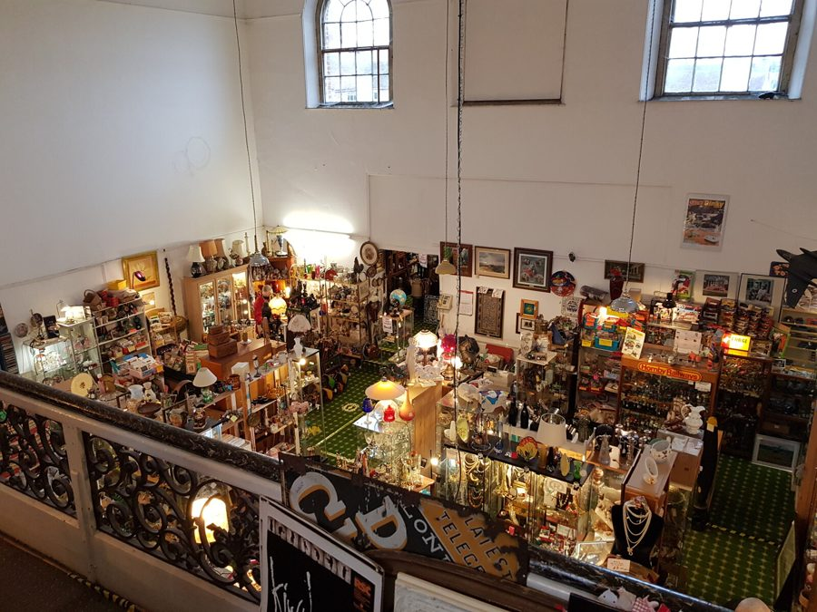
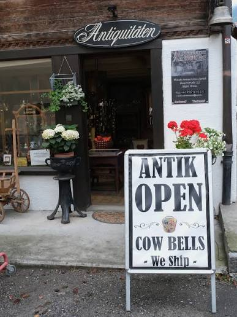

Möbel, Kleinkunst und Fundstücke aus dem Berner Oberland und darüber hinaus — jedes Stück handverlesen. Ein Besuch bei Münch Antiquitäten lohnt sich, ob auf der Durchreise oder gezielt auf der Suche nach einem besonderen Antiquitäten-Fund.

Münch Antiquitäten ist im Herzen von Brienz zu Hause, direkt an der Brunngasse und nur wenige Schritte von der Hauptstrasse entfernt. Wer sich für Möbel, Kleinkunst und Objekte mit Geschichte interessiert, findet hier eine sorgfältig zusammengestellte Auswahl statt eines wahllosen Warenlagers. Der Laden versteht sich nicht als reines Trödelgeschäft, sondern als kuratierter Ort, an dem jedes Stück eine eigene Herkunft und oft eine eigene kleine Geschichte mitbringt.
Brienz selbst ist seit jeher für sein Handwerk bekannt — von der Holzschnitzerei bis zur Geigenbauschule — und die Nähe zu dieser Tradition prägt auch das Sortiment im Laden. Viele Stücke stammen aus Haushaltsauflösungen und Nachlässen aus der Region, andere haben einen weiteren Weg hinter sich, bevor sie in der Brunngasse ihren Platz fanden. Diese Mischung aus lokaler Handwerkstradition und überregionalen Fundstücken macht das Sortiment abwechslungsreich und sorgt dafür, dass sich ein Besuch auch für wiederkehrende Kundschaft lohnt.
Das Berner Oberland hat eine lange Geschichte im Umgang mit Holz, Textil und Kunsthandwerk, und viele der angebotenen Möbel und Objekte spiegeln diese regionale Prägung wider. Gleichzeitig ergänzt der Laden das lokale Angebot immer wieder mit Fundstücken aus anderen Regionen der Schweiz und dem angrenzenden Ausland, sodass ein breites Spektrum an Stilen, Epochen und Materialien zusammenkommt.
Für Details zum aktuellen Sortiment, eine Schätzung oder eine konkrete Anfrage lohnt sich der persönliche Besuch vor Ort am meisten — viele Stücke lassen sich in Fotos nur schwer einfangen. Interessierte sind eingeladen, unverbindlich vorbeizuschauen und sich vor Ort ein Bild von Zustand, Herkunft und Verarbeitung eines Objekts zu machen. Fragen zur Restaurierung, zur ungefähren Altersbestimmung oder zur passenden Pflege eines Stücks werden ebenfalls gerne beantwortet.

Jedes Stück wird sorgfältig ausgewählt, nicht wahllos angehäuft.
Zentral an der Brunngasse gelegen, gut erreichbar zu Fuß.
Fragen zu Herkunft und Zustand werden vor Ort gerne beantwortet.
Das Sortiment von Münch Antiquitäten gliedert sich grob in vier Bereiche, wobei sich die Grenzen im Alltag oft überschneiden. Was heute im Laden steht, hängt stark davon ab, was gerade eingekauft oder eingeliefert wurde — ein Blick vor Ort lohnt sich deshalb immer mehr als eine feste Liste.
Einzelstücke mit Charakter, für Wohnung und Haus.
Skulpturen, Figuren und dekorative Objekte.
Services und Einzelteile aus vergangenen Jahrzehnten.
Fundstücke, die sich keiner festen Kategorie zuordnen lassen.
Brienz am Brienzersee gehört zu den bekanntesten Handwerksorten des Berner Oberlands. Die Holzschnitzerei hat hier eine jahrhundertealte Tradition, und die Schule für Holzbildhauerei sowie die Geigenbauschule prägen den Ort bis heute. Diese Nähe zum traditionellen Handwerk erklärt, weshalb in der Region immer wieder qualitativ hochwertige Möbel, Skulpturen und Kleinkunstobjekte den Weg in Nachlässe und schliesslich in den Antiquitätenhandel finden.